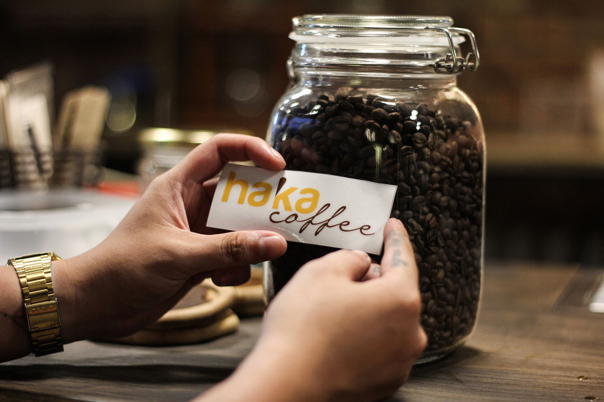

Quay lại khoảng thời gian những năm 2010, cà phê miền Bắc nói riêng và cả nước nói chung có rất nhiều vấn đề. Rất nhiều sự việc và cà phê bẩn, cà phê độn(vỏ đậu nành...), hay thậm chí là cà phê pin(tôi không viết nhầm "phin" thành "pin", đó là cà phê được trộn với pin để lấy màu),... Trước khi các ông lớn của cà phê thế giới như starbuck đặt chân tới Việt Nam, người dân chỉ được tiếp xúc với cà phê thông qua những gói cà phê hòa tàn ít phẩm chất, hay là tại những quán cà phê nhỏ lẻ với nguồn gốc hạt cà phê không ai đảm bảo. Là một người yêu cà phê thuần túy, mong muốn đem cà phê sạch đến mọi người ông chủ béo đã vay mượn, đàu tư 1 khoản tiền không hề nhỏ để tạo ra nhà máy rang xay của riêng mình, đưa hạt cà phê sạch, chuẩn đến với mọi người. Giai đoạn đầu, thương hiệu gặp rất nhiều khó khăn, nhiều khách hàng đã quen với ly cà phê cũ, khi bán những hạt cà phê sạch của mình đến với mọi người, có người ủng hộ có người lại chê bai, Nhiều nơi khi nhập cà phê về đã phải ánh lại rằng khách hàng không mấy mặn mà với loại cà phê mới này. Đứng trước nhiều khó khăn anh chủ béo vẫn giữ được tôn chỉ của mình, và rồi trải qua những năm tháng khó khăn, thương hiệu cà phê hạt của anh chủ béo dã đạt được những thành công. Mỗi tháng xuất ra hàng tấn cà phê thành phẩm ra thị trường, cung cấp cho nhiêu quán cà phê tại thành phố Hà Nội cũng nhữ nhiều tỉnh trên cả nước. Tôn chỉ cà phê sạch, pha chế đúng quy cách và làm việc đặt khách hàng làm trên hết đã được truyền thụ lại cho Haka Coffee để đó trở thành sứ mệnh, tôn chỉ hành động giúp Haka đặt được nhiều thành công.
